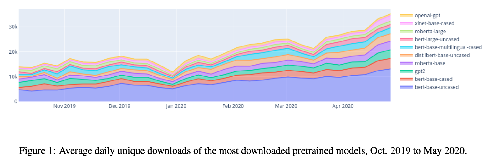
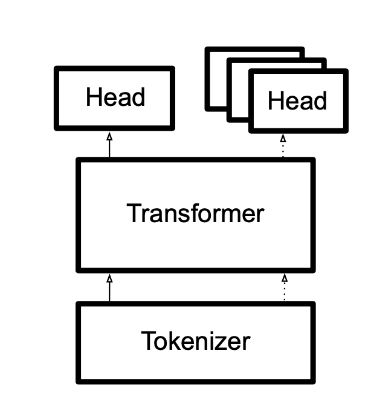
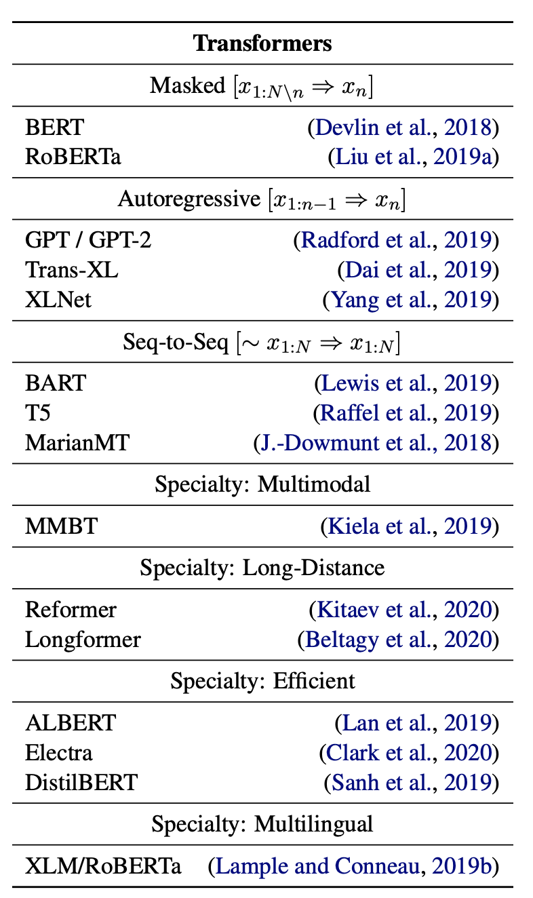
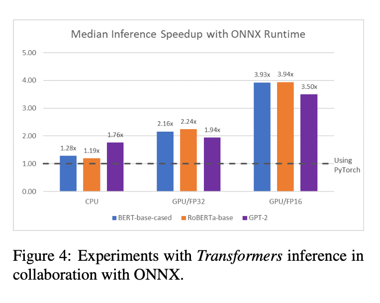

1. Read the title and make an opinion of what’s in the paper (e.g., the area, the task)
Year: 2020
🤗 Transformers, State-of-the-Art Natural Language Processing
Most people are already pretty familiar with 🤗 Transformers, but if not, its a Transformers library, focusing on (for now) NLP.
2. Read the abstract well and form a hypothesis of
- What’s new in the paper?
- Do you have a clear overview about what the paper is all about?
Transformers is an open-source library with the goal of opening up these advances to the wider machine learning community.
It sometimes surprises me how much state of the art open source code is out there, but I am certainly thankful because I can benefit from it quite a lot.
The library consists of carefully engineered state- of-the art Transformer architectures under a unified API.
I am looking for what is new in this paper, as a contribution to the field, but my personal opinion is that the Huggingface Library is one of the best I’ve ever used.
Transformers is designed to be extensible by researchers, simple for practitioners, and fast and robust in industrial deployments.
This is a tough balance to maintain.
3. Look at the images and extract a set of “questions” about what is not clear about their method from the images. Now your job is to answer these questions by reading the paper.
Figure 1 shows that interest is certainly growing. More than doubling in less than a year.


This shows their fundamental architecture that each model is a combination of a Tokenizer, Transformer, and one or many Heads.
4. Read the method aiming to answer your “questions” about the paper. Focus on understanding only the things relevant for the story (i.e., to understand the contribution).
The Library is built to match the standard data pipeline of NLP. Each corresponding piece of the architecture in Figure 2 matches a piece of the data pipeline.
- Tokenize The tokenizer preprocesses the data and prepares it for the model to be fed in token by token.
- Transformer These models are at the heart of the system, and do the heavy processing.
- Heads Each Head is an output to a final prediction, and needs to be designed with the end task in mind.
So how has the library contributed to making easier and more open?
Transformers
The paper notes these are carefully tested, and include a number of different architectures to choose from.

To start, these are complex models that took much engineering effort to produce, so to have them freely available is quite something!
There is also the fact that models each approach various design decisions differently, which the API cleanly protects the user from making incompatible decisions.
Tokenizers
A necessary component to NLP is tokenizing and the Transformers library has rewritten their tokenizers in Rust to speed up this classically slow problem.
They also make NLP easier and more open by including some necessary functions inside the tokenizers such as padding and setting max length.
Heads
Each head must be designed with the task in mind, so the library has simplified this by creating a unified API based on the task at hand. By following a simple naming pattern, ModelNameForSequenceClassification, the developer can easily instantiate a model with the correct head.
Some heads also come with additional functionality such as sampling and beam search.
Community Model Hub
The library also distributes open models which can be contributed by the community. This enables wide distribution of models and a huge selection for each developer as the ecosystem for trained models grows.
The library creates a unified and simple interface for instantiating its models by passing a model path name through the library. The library then checks for local version, and will download the model if not.
Deployment
🤗 allows for exporting its models to various intermediate neural network representations, for further compilation. For example, a Transformers model can be exported to the Open Neural Network Exchange format (ONNX) for potential speedups shown in Figure 4.

5. Read the experiments to convince you that the show results are caused by their claim. Be aware that the experiments highlighted are the best scenarios and are fully hyper-parameter tuned.
There are no experiments.
6. Make sure you answered all your questions. Did the authors convince you that their story has the effect that they claim?
My personal experience holds more weight than the paper, but I can testify that the library is good for two reasons. Firstly, it is simple to get started and see results. That is always important for motivation to get things just working. Second they provide extendability to experiment and analyze. I was working on an NLP problem and was able to get almost instant results using the 🤗 Huggingface library, then in time, I needed to analyze the internal representations of the model and was able to modify a few declarations, and view the inner workings of the model.